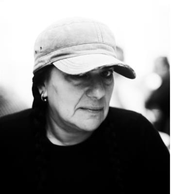
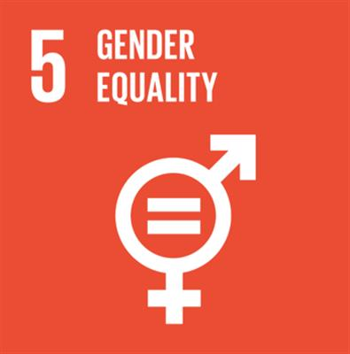

Teresa Margolles researches the social causes and consequences of death
SOURCE: ART 2030 NEWSLETTER
TERESA MARGOLLES - JAMES COHAN GALLERY
On this International Women's Day we celebrate Teresa Margolles' fight for the nameless victims
Trained as a forensic pathologist, Teresa Margolles was employed in the early 1990’s as a mortician in Mexico City. Her work as an artist stems from her proximity to nameless victims of drug-trafficking violence whose unidentifiable bodies passed in numbers through the morgue, largely regarded as “collateral damage.”
Working closely with communities who are precluded from access to systems of social care, Margolles explores the relationship between violence and marginality, especially in light of gender. Her methodical research develops into object-based interventions: photographs of trans sex workers, many of whom are now dead, standing in the ruins of demolished nightclubs where they once worked, or posters with the faces of missing women affixed to glass panels that rattle to the sound of a train carrying manufactured goods from Juárez to El Paso.

ABOUT TERESA MARGOLLES
For over twenty-five years, Teresa Margolles (b. 1963, Culiacán, Sinaloa, Mexico) has investigated the social and aesthetic dimensions of conflict, creating sculptural installations, photographs, films, and performances imbued with material traces of death. The artist’s work most often incorporates physical remnants of violent crimes resulting from political corruption and social exclusion—blood-stained sheets, glass shards from shattered windshields, bullet-ridden walls, or used surgical threads—whose victims are otherwise rendered invisible.

GOAL 5: GENDER EQUALITY
Gender bias is undermining our social fabric and devalues all of us. It is not just a human rights issue; it is a tremendous waste of the world’s human potential. By denying women equal rights, we deny half the population a chance to live life at its fullest. Political, economic and social equality for women will benefit all the world’s citizens. Together we can eradicate prejudice and work for equal rights and respect for all.
Bring impactful art experiences to life with ART 2030
Art changes people, and people change the world. We invite you to join us in creating impactful art experiences that captivate, inspire action, and ignite change. Each and every donation brings our mission one step further - and support can be given in a number of ways!
- International donors can donate directly into ART 2030's bank account
- US-based donors can support ART 2030 through a contribution to the American Friends of ART 2030 Fund (501c3/509a1)
- Supporters can join as a member for 1 year with just 200 DKK (30 USD)
SOURCE: ART 2030 NEWSLETTER
TERESA MARGOLLES - JAMES COHAN GALLERY